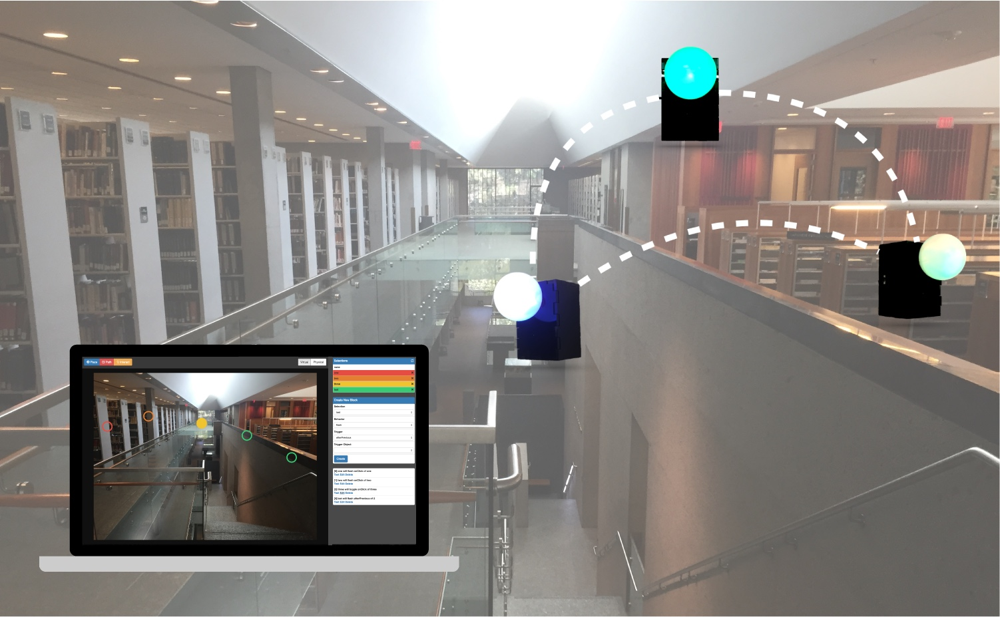
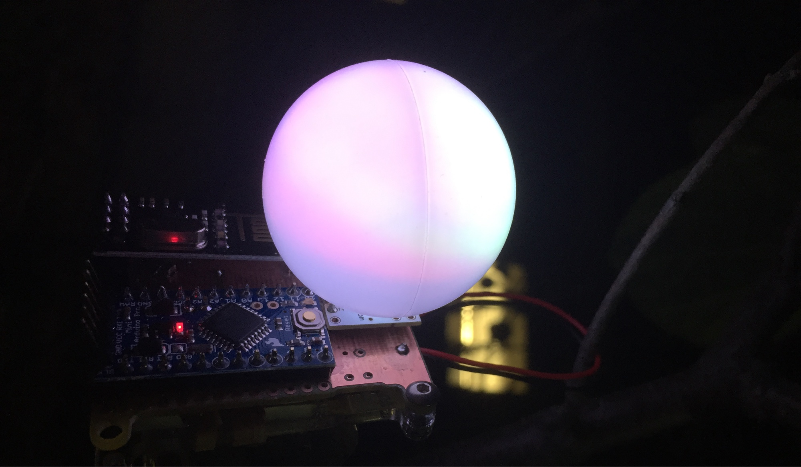
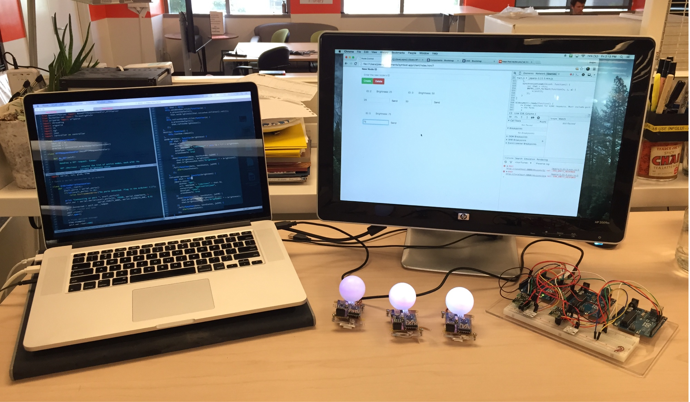
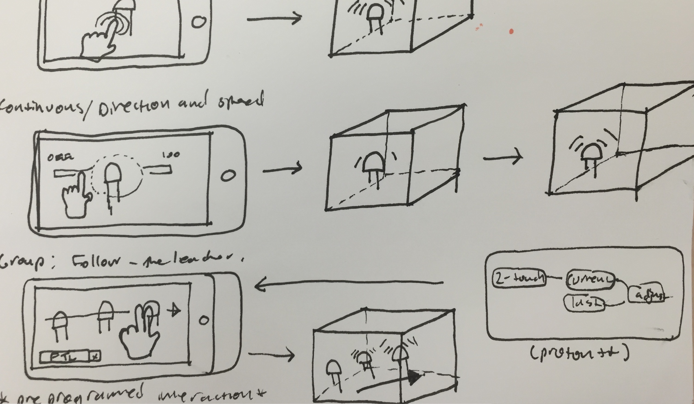
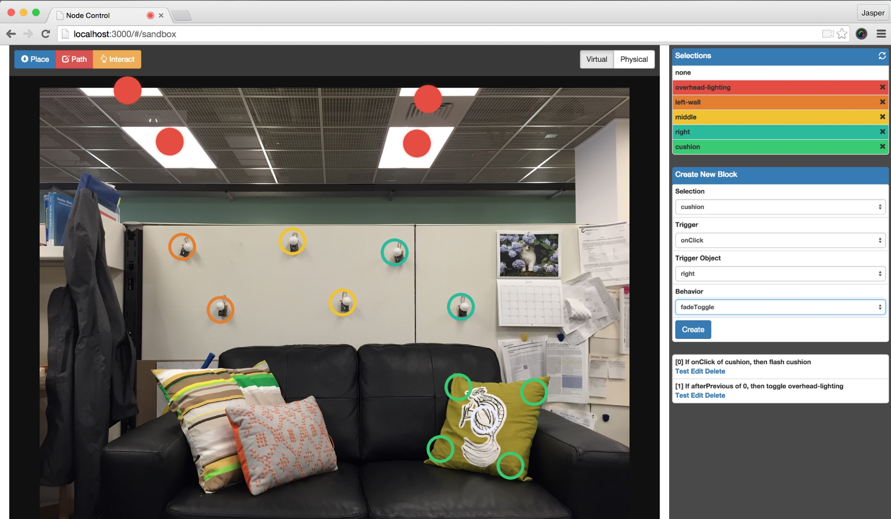
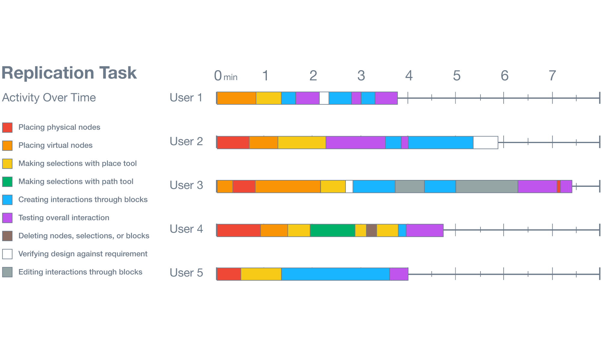

SymbIoT
Designing spatial interactions for the Internet of Things.
Overview
SymbIoT is a long-term research project about giving end users the ability to program
environments filled networked objects in the Internet of Things (IoT). It consists of
programmable network nodes, an HTTP API for controlling the nodes, and a user interface
for graphically programming the nodes with respect to the user's environment. The
primary focus of the SymbIoT architecture is the user interface.
I was supported by a Summer Undergraduate Research Fellowship (SURF) from UC Berkeley while working on this project.
Background and Research Question
With the rapid increase of network-connected devices and things, users will need a way of programming them that scales well.
Currently, approaches to programming the IoT are object-centric--we are used to programming individual devices rather
than the overall interaction between devices. SymbIoT experiments with new ways that allow users to focus on designing
coarse-grain setups of IoT objects, rather than on fine-grain device configurations.
First Iteration: Hardware and Command Line Interface

First, I built the hardware nodes that receive commands from a central controller.
Each node is an Arduino Uno microcontroller connected to both a I2C BlinkM programmable LED and a
Nordic RF24+ radio chip. In C, I programmed the Arduino to poll the radio,
transmit and process bytes, and illuminate the BlinkM led with various brightness
and color according to a low-level domain-specifc language. For example, to set node 2
to 100% brightess, from the central controller, one would enter:
>>> s2,100
Second Iteration: Web API
I wrote an API that translates HTTP requests into firmware-level commands
for the nodes. I used Express.js running on a Node.js server, integrated
with MongoDB for keeping system state. This step was important to be able
to control the nodes from a web browser.

More explanation might go here.
Third Iteration: User Interface

Designing the software user interface was the principle challenge of the project, answering
the fundamental question: how should people program IoT object-rich environments, a task
that has never had a UI designed for it before?

To explore this question, I first conducted a pilot study to test the domain of real-time direct
manipulation user interfaces. Two trends I noticed were:

I've mocked up new UIs to test, but these plans are currently on hold.